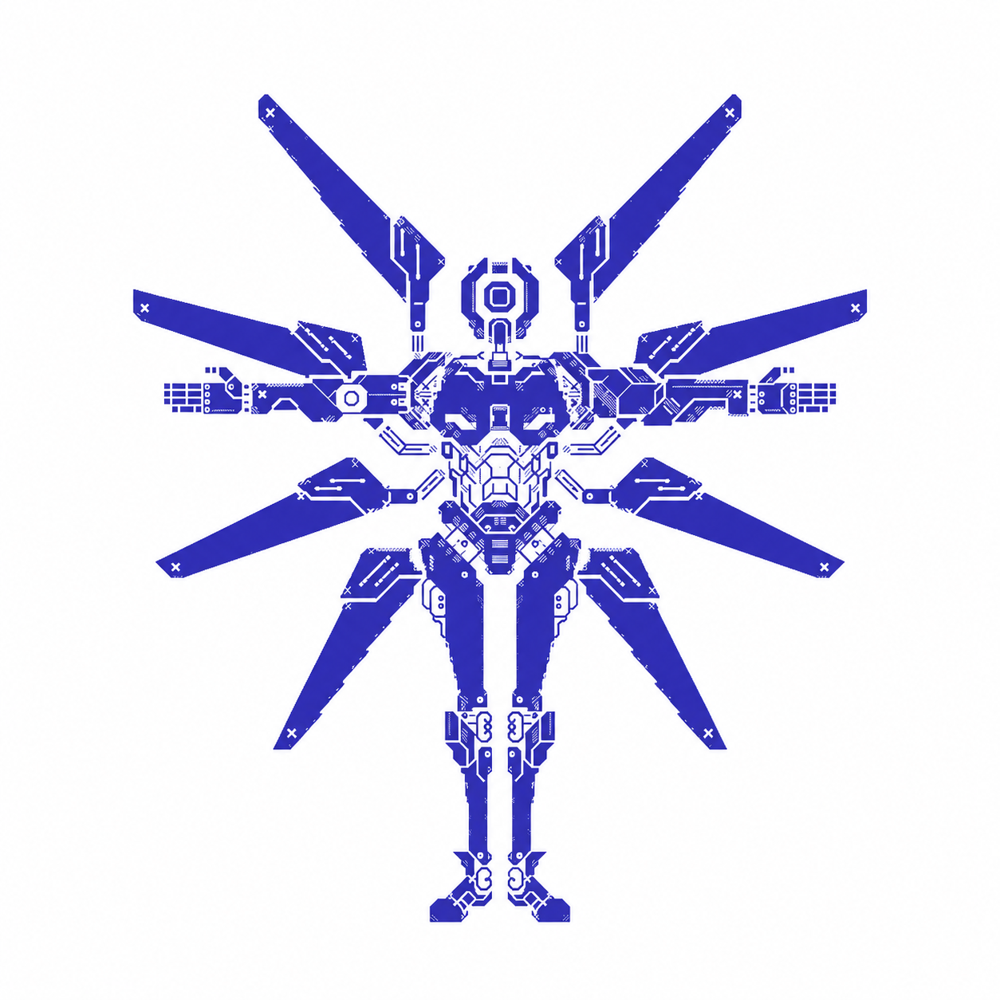

Meu primeiro post
Por: Gregory
Boas-vindas ao meu novo blog! Aqui vou compartilhar dicas de jogos e curiosidades de tecnologia.lol
Vou compartilhar conhecimentos sobre tecnologia e video-games

Por: Gregory
Boas-vindas ao meu novo blog! Aqui vou compartilhar dicas de jogos e curiosidades de tecnologia.lol
Por: Gregory
O clássico barulho do pulo do Super Mario no Nintendo 64 (Super Mario 64) não é um efeito sonoro digital comum: é a voz do dublador Charles Martinet acelerada e com a afinação mais alta..